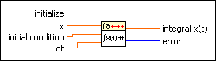

Integral x(t) PtByPt VI
Owning Palette: Integral & Differential PtByPt VIs
Requires: Full Development System
Performs the discrete integration on x. You must sample x at regular intervals of dt.
This VI is similar to the Integral x(t) VI.
 | Note By default, reentrant execution is enabled in all Point By Point VIs. |

 Add to the block diagram Add to the block diagram |
 Find on the palette Find on the palette |